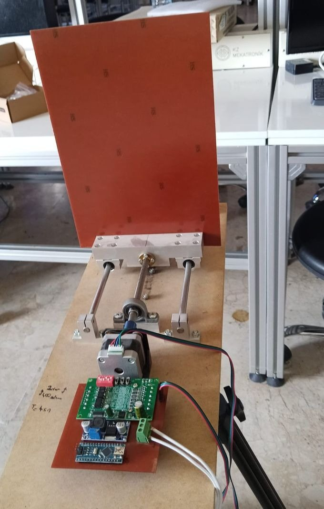
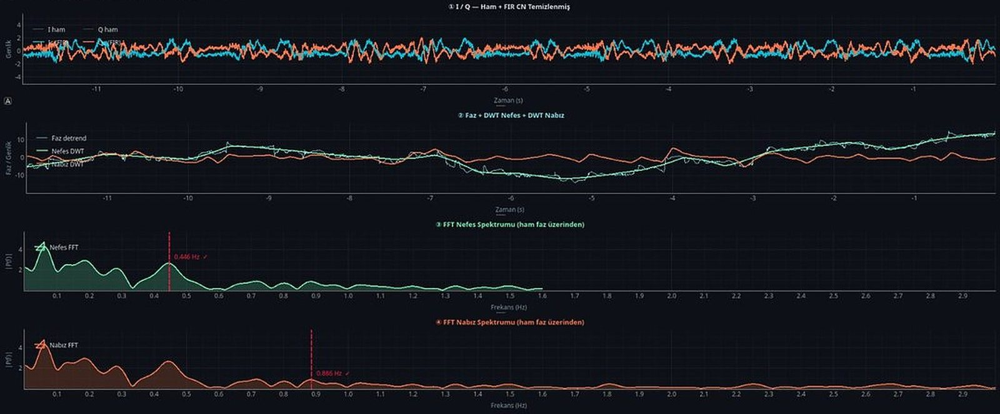
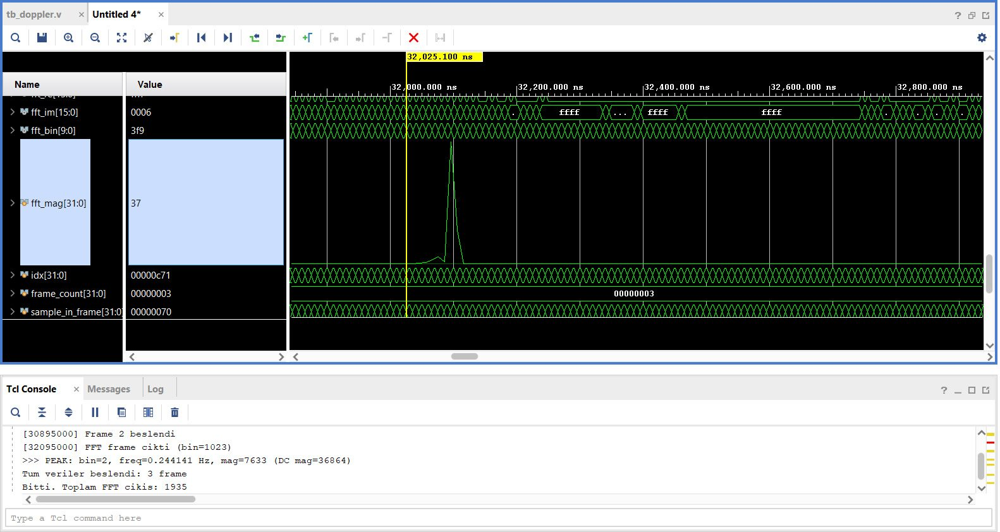

Bu sayfa hakkında. Çalışma devam ettiği için yöntemin ayrıntıları, parametreleri ve kaynak kodu paylaşılmıyor. Burada sistemin yapısı, doğrulama yaklaşımı ve ölçülen sonuçlar yer alıyor. Teknik görüşmelerde canlı demo ve ayrıntılı sunum için iletişime geçebilirsiniz.
About this page. As the work is ongoing, method details, parameters and source code are not shared. This page covers the system structure, the validation approach and the measured results. For a live demo and a detailed walkthrough in a technical interview, get in touch.
Öne çıkanlarHighlights
- Referansa göre %1,4 içindeWithin 1.4 % of ground truth Mekanik referans plakada 0,25, 0,33 ve 0,45 Hz'de (dakikada 15, 20 ve 27 nefes) ölçülen solunum hızı. Breathing rate on a mechanical reference plate at 0.25, 0.33 and 0.45 Hz (15, 20 and 27 breaths/min).
- Gerçek göğüs hareketinde çalışıyorWorks on real chest motion Dakikada ~20 ve ~12 nefeslik kontrollü solunumda 19,2 ve 12,1 /dk ölçüldü. 19.2 and 12.1 breaths/min measured for paced breathing at ~20 and ~12 breaths/min.
- Raspberry Pi 4 üzerinde gerçek zamanlıReal time on a Raspberry Pi 4 Çok iş parçacıklı yakalama ve sinyal işleme, canlı dalga biçimleri ve spektrumlarla 20 FPS arayüz. Multi-threaded capture and signal processing with a 20 FPS GUI showing live waveforms and spectra.
- 12–26 dB ortak mod bastırma12–26 dB common-mode suppression I/Q kanallarına ortak gürültüyü bastıran bir ön işleme katmanı. A pre-processing stage that suppresses noise common to the I/Q channels.
- İki katmanlı doğrulamaTwo-layer verification Cihaz üzerinde canlı kestirim, kaydedilen veri üzerinde MATLAB ile bağımsız çevrimdışı analiz. A live estimate on the device, plus an independent offline MATLAB analysis of the recordings.
- FPGA keşfiFPGA exploration Zincirin sabit noktalı modeli, gerçek kayıtlar üzerinde Xilinx FFT IP ile birlikte simüle edildi. A fixed-point model of the chain, co-simulated with the Xilinx FFT IP on real recordings.
Nasıl çalışırHow it works
Doppler radar, göğüs hareketini yansıyan taşıyıcının faz modülasyonu olarak görür. 24 GHz'de dalga boyu:
A Doppler radar sees chest motion as phase modulation of the reflected carrier. At 24 GHz the wavelength is
Yani yalnızca λ/2 = 6,25 mm'lik bir yer değiştirme tam 2π'lik bir faz dönüşü üretir. Milimetrenin altındaki solunum ve kalp atışı hareketleri bu yüzden I/Q fazında görünür. Yöntem mutlak mesafeye değil yer değiştirmeye duyarlıdır; hedef 30–50 cm çalışma aralığının herhangi bir yerinde durabilir.
So a displacement of only λ/2 = 6.25 mm produces a full 2π phase rotation. Sub-millimetre breathing and heartbeat motion therefore shows up in the I/Q phase. The method is sensitive to displacement, not absolute range, so the target can sit anywhere in the 30–50 cm working range.
Sistem mimarisiSystem architecture
Temizlenen I/Q verisi iki yola ayrılıyor: cihazda çalışan gerçek zamanlı zincir ve kaydedilen veri üzerinde çalışan, ondan bağımsız çevrimdışı analiz. İki yolun aynı sonuca ulaşması, ölçümün kendi içinde doğrulanmasını sağlıyor.
The cleaned I/Q stream splits into two paths: a real-time chain on the device and an independent offline analysis of the recordings. Both paths reaching the same answer gives the measurement an internal cross-check.
- Faz çıkarımıPhase extraction
- Solunum ve kalp bantlarına ayrıştırmaSeparation into breathing and heart bands
- Spektral kestirim ve tepe takibiSpectral estimation and peak tracking
- Canlı arayüz ve metriklerLive GUI and metrics
- 30 s kayıt (ham + temiz)30 s recording (raw + clean)
- Faz çıkarımıPhase extraction
- Spektral analizSpectral analysis
- Nihai frekans ve harmonik görünümüFinal frequency and harmonic view
Zincirde kullanılan başlıca yöntemler: FIR Hilbert tabanlı ortak mod giderme, DACM faz çıkarımı, DWT-MRA ile bant ayrıştırma, pencereli FFT ile spektral kestirim ve onaylı tepe takibi.
Main methods in the chain: FIR-Hilbert-based common-mode removal, DACM phase extraction, DWT-MRA band separation, windowed-FFT spectral estimation and confirmed peak tracking.
Donanım ve doğrulamaHardware and validation
| BlokBlock | ParçaPart | GörevRole |
|---|---|---|
| Radar | RFBeam K-LC5, 24 GHz | Dörtlü (I/Q) çıkışQuadrature (I/Q) output |
| Ön uçFront-end | Op-amp yükselteçOp-amp amplifier | I/Q sinyallerini ADC aralığına taşırBrings the I/Q signals into the ADC range |
| DAQ | MCC118 DAQ HAT | 12-bit sürekli örnekleme12-bit continuous sampling |
| İşlemciProcessor | Raspberry Pi 4 | Tüm işleme ve arayüz cihaz üzerindeAll processing and the GUI run on-device |
| Referans hedefReference target | NEMA17 + TB6560 + Arduino Nano | Frekansı ayarlanabilir salınan plakaPlate oscillating at a set frequency |


Gerçek zamanlı yazılımReal-time software
Python (NumPy, SciPy, PySide6) ile yazılan uygulama yakalama, analiz ve arayüzü ayrı iş parçacıklarında çalıştırıyor. Arayüz 20 FPS'te güncelleniyor; solunum ve kalp hızını, sinyal gücünü, işleme süresini ve "boş oda" durumunu canlı gösteriyor. Ayarlar çalışma anında değiştirilebiliyor ve 30 saniyelik kayıt işlevi ham ve temizlenmiş veriyi çevrimdışı analiz için saklıyor.
The application, written in Python (NumPy, SciPy, PySide6), runs capture, analysis and the GUI in separate threads. The GUI refreshes at 20 FPS and shows breathing and heart rate, signal power, processing time and an "empty room" state live. Settings can be changed at runtime, and a 30-second recorder keeps raw and cleaned data for offline analysis.


SonuçlarResults
Referans plakası (bilinen frekans)Reference plate (known frequency)
| Nominal | Gerçek zamanlıReal time | ÇevrimdışıOffline | DakikadaPer minute | Hata*Error* |
|---|---|---|---|---|
| 0.25 Hz (15 /min) | 0.246 Hz | 0.2531 Hz | 15.2 | +1.2 % |
| 0.33 Hz (20 /min) | 0.329 Hz | 0.3253 Hz | 19.5 | −1.4 % |
| 0.45 Hz (27 /min) | 0.446 Hz | 0.4564 Hz | 27.4 | +1.4 % |
*Çevrimdışı sonucun nominal değere göre hatası.*Offline result vs nominal.
Gerçek göğüs hareketi (kontrollü solunum)Real chest motion (paced breathing)
| HedefTarget | Gerçek zamanlıReal time | ÇevrimdışıOffline |
|---|---|---|
| ~3 s/nefes (~20 /dk)~3 s/breath (~20 /min) | 0.327 Hz (19.6 /min) | 0.3194 Hz (19.2 /min) |
| ~5 s/nefes (~12 /dk)~5 s/breath (~12 /min) | 0.214 Hz (12.8 /min) | 0.2009 Hz (12.1 /min) |

NabızHeart rate
Nabız kestirimleri fizyolojik olarak makul aralıkta çıktı ama kayıtlar arasında tutarlı değildi. Kalp atışının göğüste yarattığı hareket solunuma göre çok küçük ve bu donanımla gürültü tabanına yakın kalıyor. Bu yüzden sistem, bu haliyle güvenilir bir solunum ölçer olarak değerlendirildi.
Heart-rate estimates fell in a physiologically plausible range but were not consistent between recordings. Heartbeat chest motion is far smaller than breathing motion and stays close to the noise floor with this hardware, so in its current form the system is assessed as a reliable breathing monitor.
Mühendislik notu: sorun algoritmada değil, DAQ'taydıEngineering note: the DAQ was the problem, not the algorithm
İlk prototip düşük maliyetli bir Waveshare veri kaydedici kullanıyordu. Temiz bir test sinüsü bozuk çıkıyor, spektrumu yayılıyordu. Aynı yazılım MCC118 üzerinde temiz bir sinüs ve tek, keskin bir tepe verdi; bu yüzden DAQ değiştirildi. Sorunu algoritmada aramak yerine aynı test sinyalini iki kartla ölçmek, haftalarca yanlış yerde arama yapmayı önledi.
The first prototype used a low-cost Waveshare data logger. A clean test sine came out distorted and its spectrum smeared. The identical software on an MCC118 produced a clean sine and a single sharp peak, so the DAQ was replaced. Measuring the same test signal on both boards, instead of looking for the fault in the algorithm, avoided weeks of searching in the wrong place.

FPGA modeliFPGA model
Solunum zinciri sabit noktalı Verilog'da modellendi ve gerçek radar kayıtlarıyla Vivado'da Xilinx FFT IP ile birlikte simüle edildi. FFT çekirdeği AXI-Stream üzerinden gerçek konfigürasyon ve çerçevelemeyle sürülüyor. Aynı kayıtta model ile MATLAB referansı bir FFT bini içinde örtüşüyor.
The breathing chain was modelled in fixed-point Verilog and co-simulated in Vivado with the Xilinx FFT IP on real radar recordings. The FFT core is driven over AXI-Stream with real configuration and framing. On the same recording, the model and the MATLAB reference agree to within one FFT bin.
| Solunum tepesiBreathing peak | DakikadaPer minute | |
|---|---|---|
| MATLAB referansıMATLAB reference | 0.2636 Hz | 15.8 |
| Verilog modeli + FFT IPVerilog model + FFT IP | 0.244 Hz | 14.6 |


Xilinx FFT IP ile AXI-Stream üzerinde çalışmanın açık kaynak örneği için bitirme projesi sayfasına bakabilirsiniz.
For an open-source example of working with the Xilinx FFT IP over AXI-Stream, see the graduation project page.
DestekFunding
Bu çalışma TÜBİTAK 2209-A Üniversite Öğrencileri Araştırma Projeleri Destekleme Programı kapsamında desteklendi (Nisan 2025 – Mart 2026), Selçuk Üniversitesi Teknoloji Fakültesi Elektrik-Elektronik Mühendisliği Bölümü. Danışman: Doç. Dr. Yunus Emre Acar. Radar, DAQ, yükselteç ve laboratuvar ekipmanı bölümün Haberleşme Laboratuvarı tarafından sağlandı.
Funded by TÜBİTAK 2209-A (University Students Research Projects Support Programme), April 2025 – March 2026, at Selçuk University, Faculty of Technology, Department of Electrical and Electronics Engineering. Supervisor: Assoc. Prof. Yunus Emre Acar. The radar, DAQ, amplifier and lab equipment were provided by the department's Communication Laboratory.